Добро пожаловать на страницу о лечебных китайских капсулах!
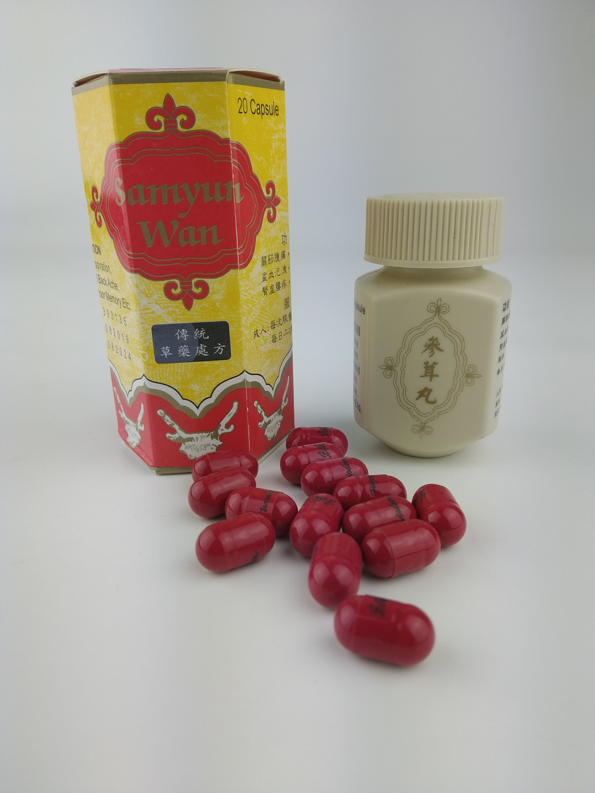
О лечебных китайских капсулах:
Лечебные китайские капсулы — это форма лекарственного средства, удобная для приема, содержащая натуральные компоненты и используемая для улучшения здоровья и борьбы с различными недугами.
Виды лечебных китайских капсул:
- Капсулы с женьшенем
- Капсулы с куркумой
- Капсулы с гинкго билоба
Применение лечебных китайских капсул:
Лечебные капсулы принимаются внутрь по указанию врача. Они могут помочь укрепить иммунитет, улучшить пищеварение и общее состояние организма.
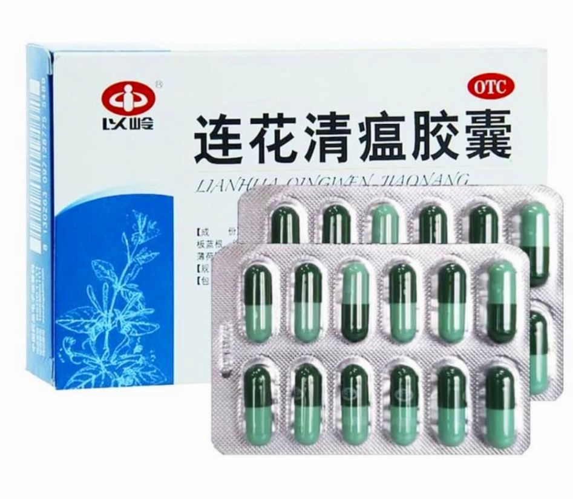
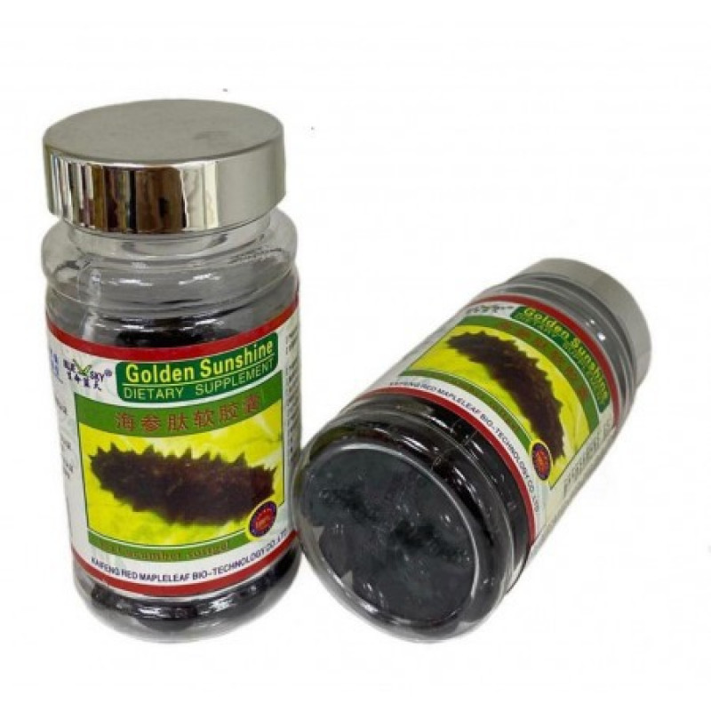
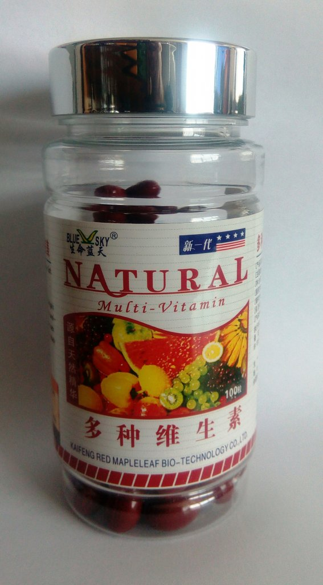
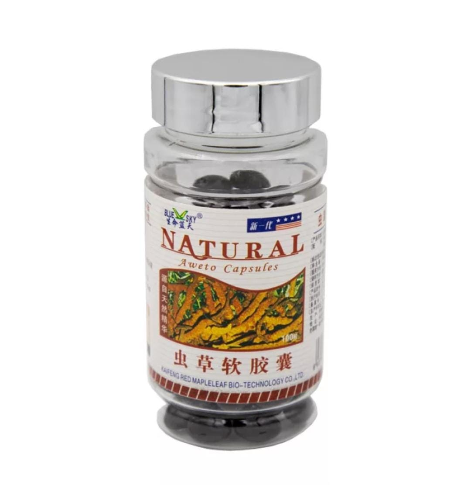
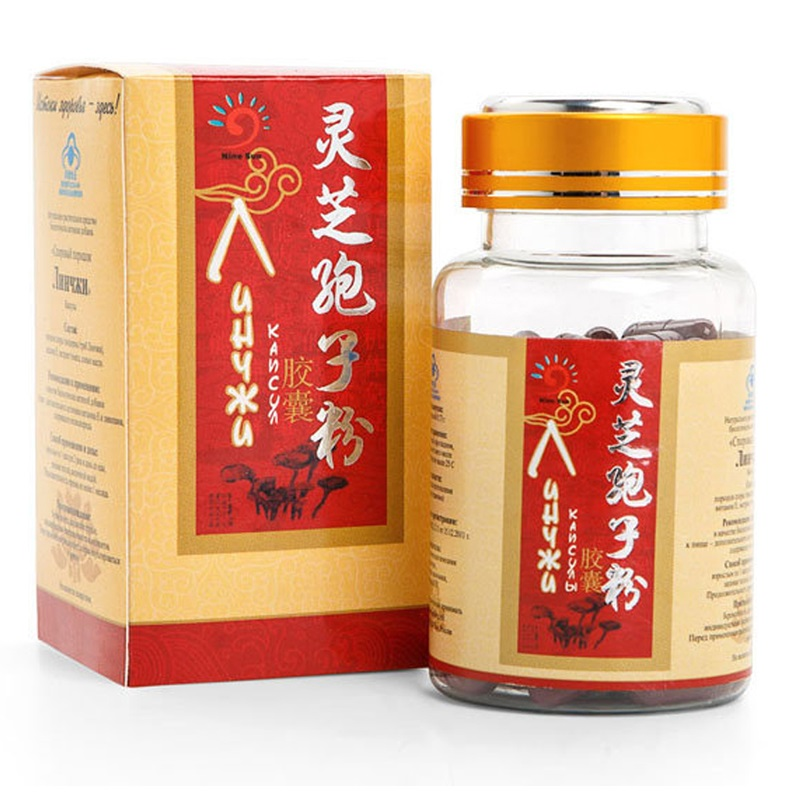
 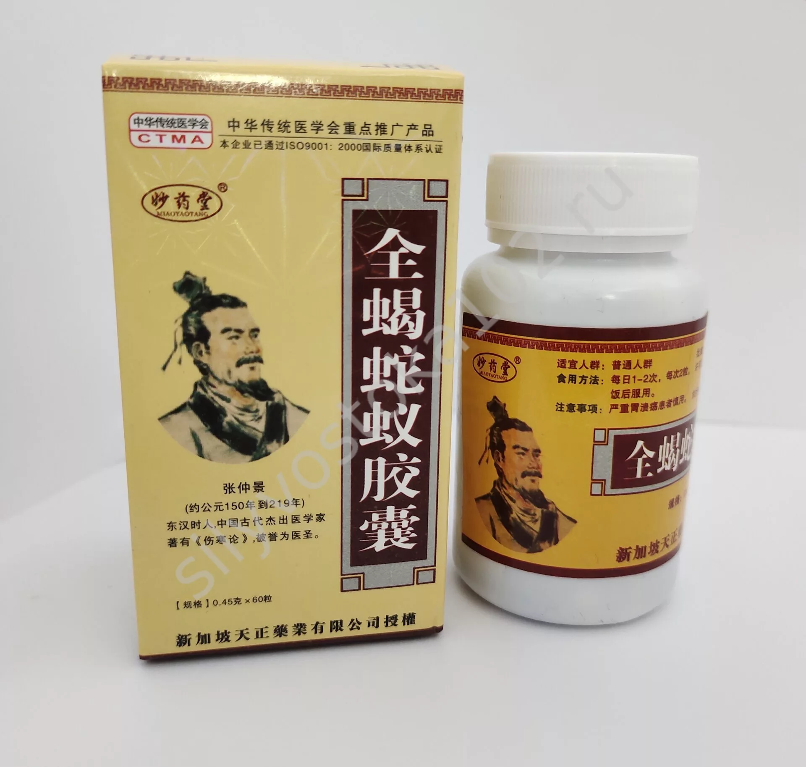
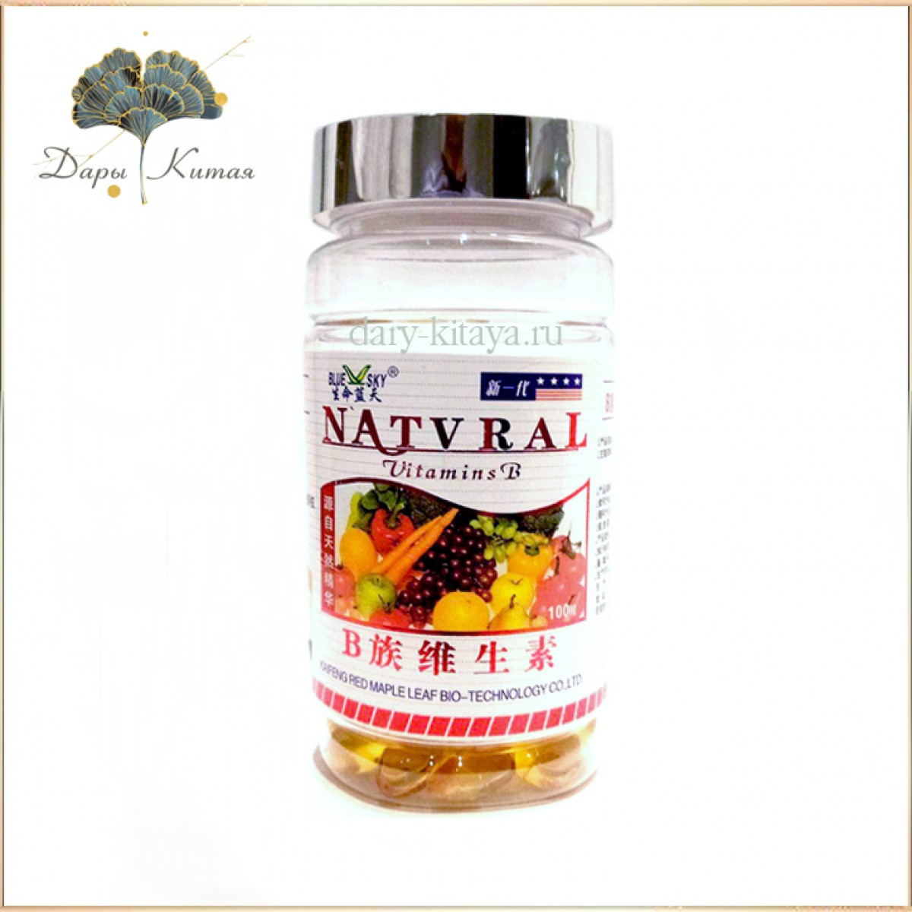
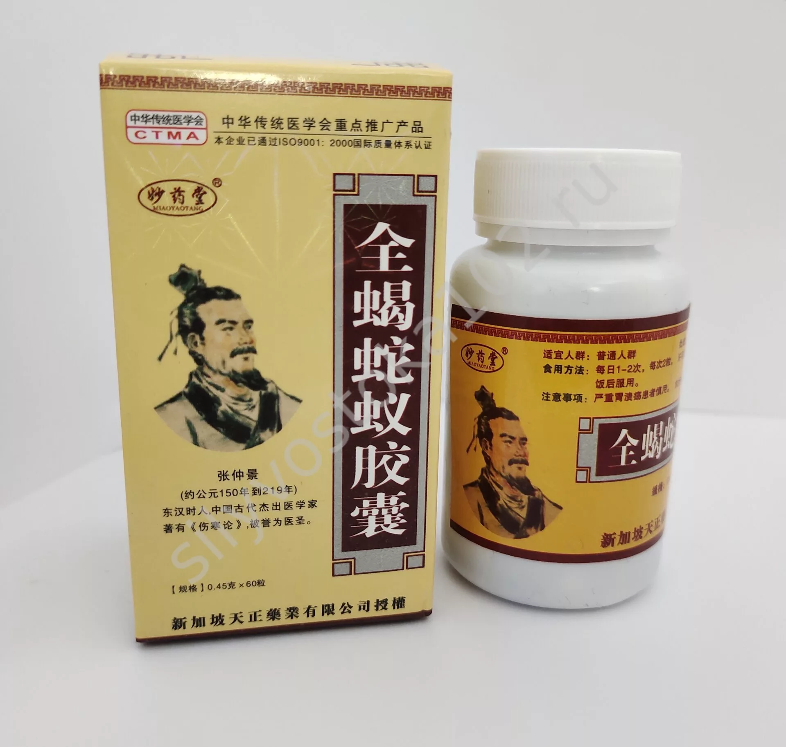
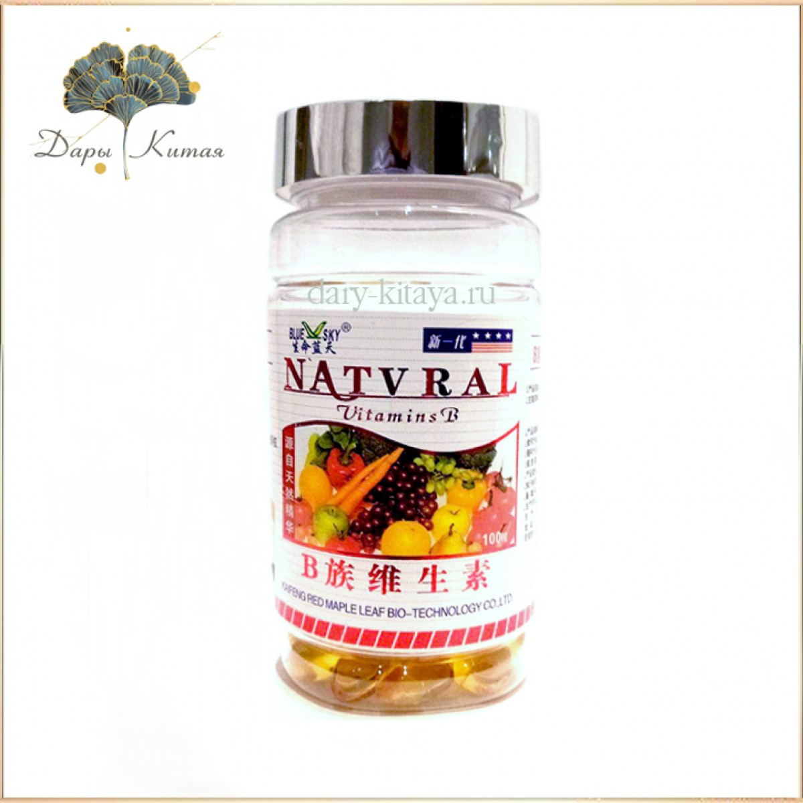
Назад
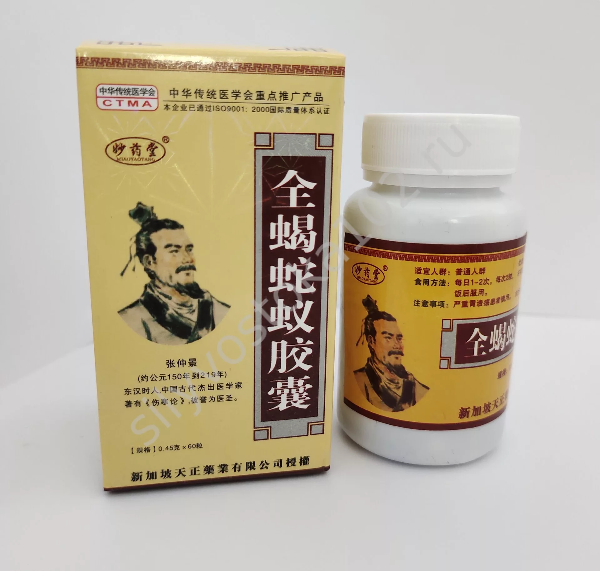
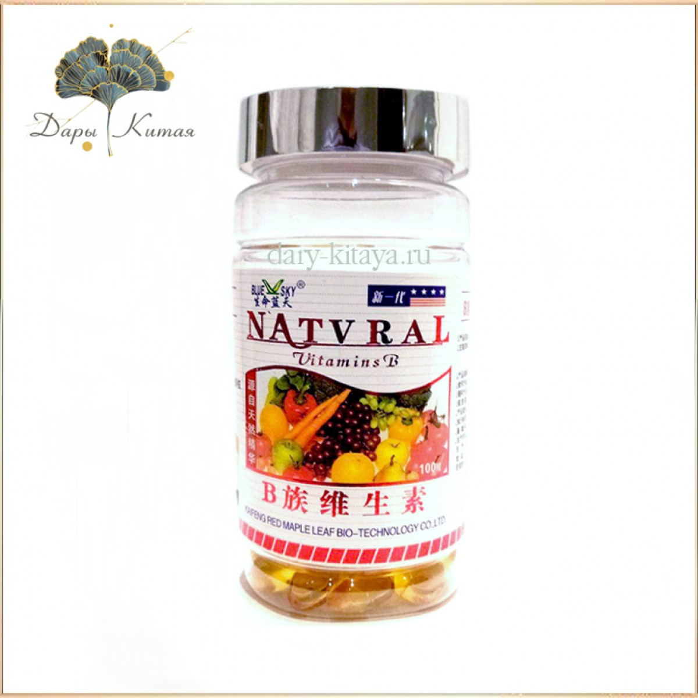